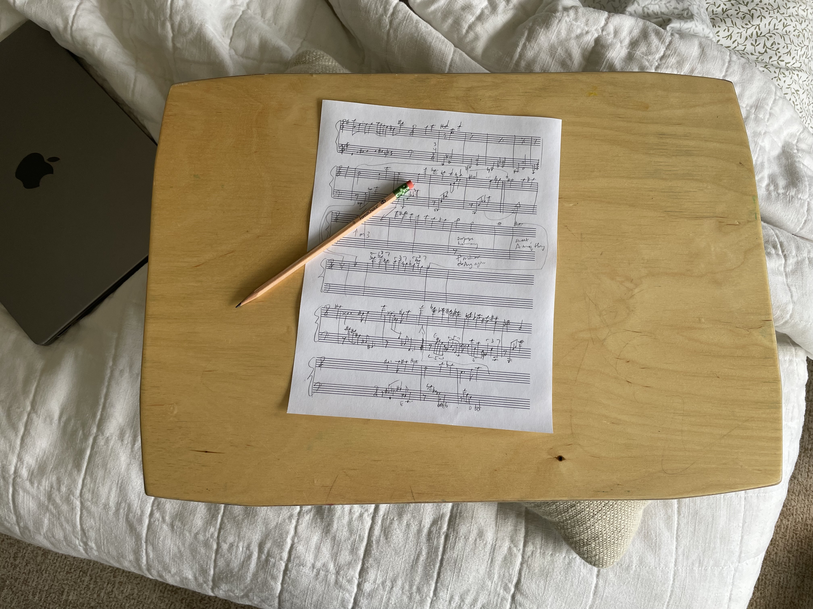

All the Goods Are Stolen
I'm wrapping up my third book of ragtime-influenced piano solos, halfway through my fourth (and last, I swear it!!!), excited to turn my attention to the next thing... whatever that is. To break myself out of a creative rut, I'm ushering in my new age of the pencil.
If you watch a couple tiny house videos on YouTube you'll soon see folks that convert seating into storage and stairs into utility cabinets—or even make a computer-station-murphy-bed thingy. This here little painting board is my desk, which I use while sitting in bed (thus, a bedesk) or at the piano (a deskiano?).
I wrote a piece some time ago which I titled “All the Goods Are Stolen,” a line I stole from Gertrude Stein. I still remember when another composer riffed on that title when he reviewed my work in general, writing that indeed all the goods in my music are stolen. Who makes art that isn't stolen?
I may have come to terms with the accusation, thanks to John White, whose many dozens of (mostly exceedingly short) piano sonatas, each one called Piano Sonata, lean into their post-experimental conservative experimentalism, music that disarms with charm, grace, wit, and brevity, all the while winking at other styles.
Alright, I'm gonna steal from John too. "Sonata" is the perfect all-purpose title because it means nothing, the music owes nothing to it. I suppose he stole the idea from Scarlatti. I'm in. So here's Piano Sonata of 10 April 2026, with more to come.
